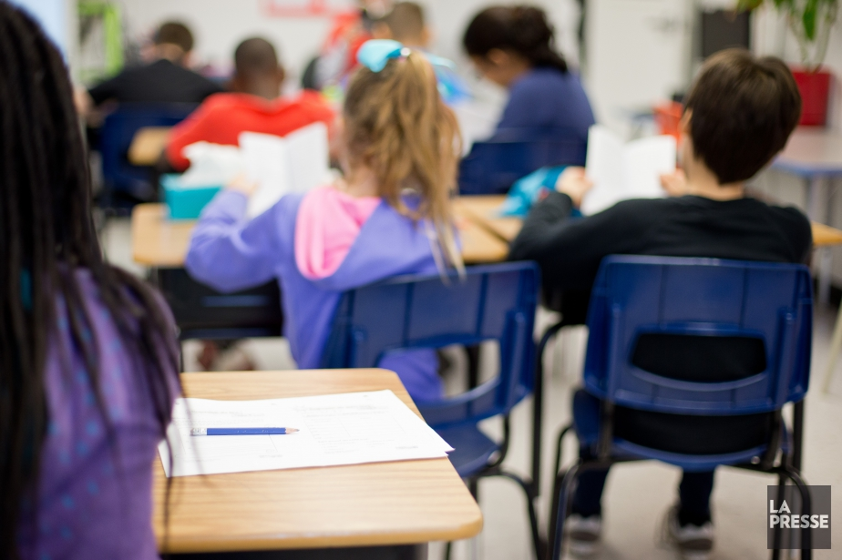

Lab-École: Couillard annoncera des investissements

Photo Sarah Mongeau-Birkett, Archives La
Ils seront accompagnés de deux des fondateurs du Lab-École, l'architecte Pierre Thibault et le promoteur de sport Pierre Lavoie. Le troisième membre de l'équipe est le chef cuisinier Ricardo Larrivée.
L'annonce se fera à l'école de la Grande-Hermine, à Québec.
Le gouvernement avait annoncé en novembre 2017 la mise sur pied du Lab-École, en lui accordant un budget de 3 millions.
Québec prévoit rénover cinq écoles pour la rentrée scolaire 2021 à partir des recommandations que lui fera le Lab-École, notamment en ce qui a trait à l'aménagement des lieux, aux saines habitudes de vie et à l'alimentation.
Presse
Caroline Plante
La Presse Canadienne
Québec
Ils seront accompagnés de deux des fondateurs du Lab-École, l'architecte Pierre Thibault et le promoteur de sport Pierre Lavoie. Le troisième membre de l'équipe est le chef cuisinier Ricardo Larrivée.
L'annonce se fera à l'école de la Grande-Hermine, à Québec.
Le gouvernement avait annoncé en novembre 2017 la mise sur pied du Lab-École, en lui accordant un budget de 3 millions.
Québec prévoit rénover cinq écoles pour la rentrée scolaire 2021 à partir des recommandations que lui fera le Lab-École, notamment en ce qui a trait à l'aménagement des lieux, aux saines habitudes de vie et à l'alimentation.
Le gouvernement avait annoncé en novembre 2017 la mise sur pied du Lab-École, en lui accordant un budget de 3 millions.
fff